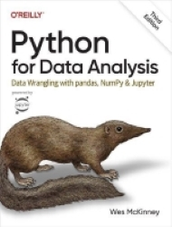

Created by Wes McKinney, a ‘quant’ for hedge-fund AQR.
a library for processing tabular data, both numeric and time series.
it provides data structures (series, dataframe) and methods for data analysis.
W. McKinney, Python for Data Analysis, 3/e. O’Reilly 2022.

A one-dimensional object containing values and associated labels, called Index.
Unless we assign indices, Pandas will simply enumerate the items.
# Assign explicit indices to our data
s2 = pd.Series([10, 20, 30, 40], index = ['a', 'b', 'c', 'd'])
s2a 10
b 20
c 30
d 40
dtype: int64Example: putting 10 quid a month into a savings account
From dictionaries to Pandas series
Use the index to select one or more specific values.
Filter elements
apply element-wise mathematical operations…
or a combination of both:
2D structures where values are labelled by their index and column location.
locSelect data according to their location label.
Integers 30.0
Floats 3.5
Name: c, dtype: float64a 10
b 20
c 30
d 40
Name: Integers, dtype: int64ilocSelect a specific slice of data according to its position.
Integers 30.0
Floats 3.5
Name: c, dtype: float64a 10
b 20
c 30
d 40
Name: Integers, dtype: int64Complex selection is achieved applying Boolean filters. Multiple conditions can be combined in one statement.
AxisDataFrames operate on 2 dimensions.
Axis = 0 invokes functions across rows
default behaviour when the axis is not specified.
Axis = 1 invokes functions across columns.
We can mix element-wise operations with axis functions
Example: Create a column with the sum of squares of each row.
where()Pandas executes where() differently
Numpy allows specifying the respective action associated to True and False
array([[0. , 2. , 4. ],
[6. , 8. , 2.5],
[3. , 3.5, 4. ]])Pandas assigns n/a when False
Read a datafile and turn it into a DataFrame. Several arguments are available to specify the behavior of the process:
index_col sets the column of the csv file to be used as index of the DataFrame
sep specifies the separator in the source file
parse_dates sets the cols. to be converted into datetimes
info()The info() method outputs top-down information on the DataFrame
<class 'pandas.core.frame.DataFrame'>
RangeIndex: 18 entries, 0 to 17
Data columns (total 5 columns):
# Column Non-Null Count Dtype
--- ------ -------------- -----
0 Name 18 non-null object
1 Sex 18 non-null object
2 Age 18 non-null int64
3 Height(in) 18 non-null int64
4 Weight(lbs) 18 non-null int64
dtypes: int64(3), object(2)
memory usage: 852.0+ byteshead() and tail()Handy visualisation of first/last n rows (default = 5)
Selecting the index column affects the structure of the DataFrame and thus information retrieval.
Caution: the index does not have to be unique. Multiple rows could have the same index name.
describe()| Age | Height(in) | Weight(lbs) | |
|---|---|---|---|
| count | 18.000000 | 18.000000 | 18.000000 |
| mean | 34.666667 | 69.055556 | 146.722222 |
| std | 7.577055 | 3.522570 | 22.540958 |
| min | 23.000000 | 62.000000 | 98.000000 |
| 25% | 30.000000 | 66.250000 | 132.000000 |
| 50% | 32.500000 | 69.500000 | 150.000000 |
| 75% | 38.750000 | 71.750000 | 165.250000 |
| max | 53.000000 | 75.000000 | 176.000000 |
Also on selections:
The value_counts() method computes the unique values and how many times they occur.
Pandas objects come with methods for visualisation
they are built on top of matplotlib